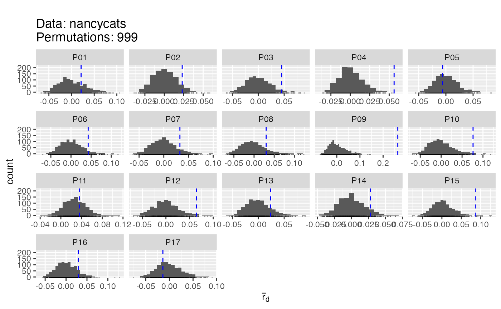
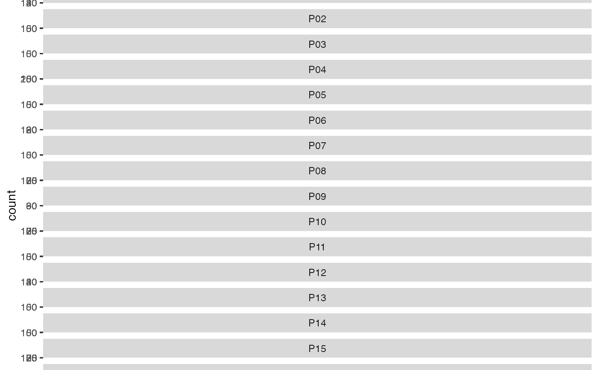

R/Index_calculations.r
poppr.RdFor the poppr package description, please see
package?poppr
This function allows the user to quickly view indices of heterozygosity,
evenness, and linkage to aid in the decision of a path to further analyze
a specified dataset. It natively takes genind and
genclone objects, but can convert any raw data formats
that adegenet can take (fstat, structure, genetix, and genpop) as well as
genalex files exported into a csv format (see read.genalex for
details).
poppr( dat, total = TRUE, sublist = "ALL", exclude = NULL, blacklist = NULL, sample = 0, method = 1, missing = "ignore", cutoff = 0.05, quiet = FALSE, clonecorrect = FALSE, strata = 1, keep = 1, plot = TRUE, hist = TRUE, index = "rbarD", minsamp = 10, legend = FALSE, ... )
| dat | a |
|---|---|
| total | When |
| sublist | a list of character strings or integers to indicate specific
population names (accessed via |
| exclude | a |
| blacklist | DEPRECATED, use exclude. |
| sample | an integer indicating the number of permutations desired to
obtain p-values. Sampling will shuffle genotypes at each locus to simulate
a panmictic population using the observed genotypes. Calculating the
p-value includes the observed statistics, so set your sample number to one
off for a round p-value (eg. |
| method | an integer from 1 to 4 indicating the method of sampling
desired. see |
| missing | how should missing data be treated? |
| cutoff |
|
| quiet |
|
| clonecorrect | default |
| strata | a |
| keep | an |
| plot |
|
| hist |
|
| index |
|
| minsamp | an |
| legend |
|
| ... | arguments to be passed on to |
A data frame with populations in rows and the following columns:
A vector indicating the population factor
An integer vector indicating the number of individuals/isolates in the specified population.
An integer vector indicating the number of multilocus genotypes
found in the specified population, (see: mlg)
The expected number of MLG at the lowest common sample size
(set by the parameter minsamp).
The standard error for the rarefaction analysis
Shannon-Weiner Diversity index
Stoddard and Taylor's Index
Simpson's index
Evenness
Nei's gene diversity (expected heterozygosity)
A numeric vector giving the value of the Index of Association for
each population factor, (see ia).
A numeric vector indicating the p-value for Ia from the number
of reshufflings indicated in sample. Lowest value is 1/n where n is
the number of observed values.
A numeric vector giving the value of the Standardized Index of
Association for each population factor, (see ia).
A numeric vector indicating the p-value for rbarD from the
number of reshuffles indicated in sample. Lowest value is 1/n where
n is the number of observed values.
A vector indicating the name of the original data file.
This table is intended to be a first look into the dynamics of
mutlilocus genotype diversity. Many of the statistics (except for the the
index of association) are simply based on counts of multilocus genotypes
and do not take into account the actual allelic states.
Descriptions of the statistics can be found in the Algorithms and
Equations vignette: vignette("algo", package = "poppr").
The sampling procedure is explicitly for testing the
index of association. None of the other diversity statistics (H, G, lambda,
E.5) are tested with this sampling due to the differing data types. To
obtain confidence intervals for these statistics, please see
diversity_ci.
Rarefaction analysis is performed on the number of
multilocus genotypes because it is relatively easy to estimate (Grünwald et
al., 2003). To obtain rarefied estimates of diversity, it is possible to
use diversity_ci with the argument rarefy = TRUE
This function outputs a ggplot2 graphic of
histograms. These can be manipulated to be visualized in another manner by
retrieving the plot with the last_plot command from
ggplot2. A useful manipulation would be to arrange the graphs into a
single column so that the values of the statistic line up:
p <-
last_plot(); p + facet_wrap(~population, ncol = 1, scales = "free_y")
The name for the groupings is "population" and the name for the x axis is
"value".
The calculation of Hexp has changed from poppr 1.x. It was
previously calculated based on the diversity of multilocus genotypes,
resulting in a value of 1 for sexual populations. This was obviously not
Nei's 1978 expected heterozygosity. We have thus changed the statistic to
be the true value of Hexp by calculating \((\frac{n}{n-1}) 1 - \sum_{i =
1}^k{p^{2}_{i}}\) where p is the allele
frequencies at a given locus and n is the number of observed alleles (Nei,
1978) in each locus and then returning the average. Caution should be
exercised in interpreting the results of Hexp with polyploid organisms with
ambiguous ploidy. The lack of allelic dosage information will cause rare
alleles to be over-represented and artificially inflate the index. This is
especially true with small sample sizes.
Paul-Michael Agapow and Austin Burt. Indices of multilocus linkage disequilibrium. Molecular Ecology Notes, 1(1-2):101-102, 2001
A.H.D. Brown, M.W. Feldman, and E. Nevo. Multilocus structure of natural populations of Hordeum spontaneum. Genetics, 96(2):523-536, 1980.
Niklaus J. Gr\"unwald, Stephen B. Goodwin, Michael G. Milgroom, and William E. Fry. Analysis of genotypic diversity data for populations of microorganisms. Phytopathology, 93(6):738-46, 2003
Bernhard Haubold and Richard R. Hudson. Lian 3.0: detecting linkage disequilibrium in multilocus data. Bioinformatics, 16(9):847-849, 2000.
Kenneth L.Jr. Heck, Gerald van Belle, and Daniel Simberloff. Explicit calculation of the rarefaction diversity measurement and the determination of sufficient sample size. Ecology, 56(6):pp. 1459-1461, 1975
Masatoshi Nei. Estimation of average heterozygosity and genetic distance from a small number of individuals. Genetics, 89(3):583-590, 1978.
S H Hurlbert. The nonconcept of species diversity: a critique and alternative parameters. Ecology, 52(4):577-586, 1971.
J.A. Ludwig and J.F. Reynolds. Statistical Ecology. A Primer on Methods and Computing. New York USA: John Wiley and Sons, 1988.
Simpson, E. H. Measurement of diversity. Nature 163: 688, 1949 doi:10.1038/163688a0
Good, I. J. (1953). On the Population Frequency of Species and the Estimation of Population Parameters. Biometrika 40(3/4): 237-264.
Lande, R. (1996). Statistics and partitioning of species diversity, and similarity among multiple communities. Oikos 76: 5-13.
Jari Oksanen, F. Guillaume Blanchet, Roeland Kindt, Pierre Legendre, Peter R. Minchin, R. B. O'Hara, Gavin L. Simpson, Peter Solymos, M. Henry H. Stevens, and Helene Wagner. vegan: Community Ecology Package, 2012. R package version 2.0-5.
E.C. Pielou. Ecological Diversity. Wiley, 1975.
Claude Elwood Shannon. A mathematical theory of communication. Bell Systems Technical Journal, 27:379-423,623-656, 1948
J M Smith, N H Smith, M O'Rourke, and B G Spratt. How clonal are bacteria? Proceedings of the National Academy of Sciences, 90(10):4384-4388, 1993.
J.A. Stoddart and J.F. Taylor. Genotypic diversity: estimation and prediction in samples. Genetics, 118(4):705-11, 1988.
Zhian N. Kamvar
#> Pop N MLG eMLG SE H G lambda E.5 Hexp Ia rbarD #> 1 P01 10 10 10 0.00e+00 2.30 10 0.900 1 0.649 0.1656 0.0211 #> 2 P02 22 22 10 0.00e+00 3.09 22 0.955 1 0.701 0.1818 0.0230 #> 3 P03 12 12 10 0.00e+00 2.48 12 0.917 1 0.719 0.3546 0.0452 #> 4 P04 23 23 10 5.03e-07 3.14 23 0.957 1 0.750 0.4494 0.0563 #> 5 P05 15 15 10 2.77e-07 2.71 15 0.933 1 0.640 -0.0475 -0.0060 #> 6 P06 11 11 10 0.00e+00 2.40 11 0.909 1 0.745 0.3337 0.0426 #> 7 P07 14 14 10 0.00e+00 2.64 14 0.929 1 0.667 0.2569 0.0326 #> 8 P08 10 10 10 0.00e+00 2.30 10 0.900 1 0.752 0.2388 0.0301 #> 9 P09 9 9 9 0.00e+00 2.20 9 0.889 1 0.694 2.0845 0.2636 #> 10 P10 11 11 10 0.00e+00 2.40 11 0.909 1 0.698 0.5955 0.0763 #> 11 P11 20 20 10 0.00e+00 3.00 20 0.950 1 0.783 0.2847 0.0363 #> 12 P12 14 14 10 0.00e+00 2.64 14 0.929 1 0.667 0.4899 0.0643 #> 13 P13 13 13 10 7.30e-08 2.56 13 0.923 1 0.688 0.1855 0.0237 #> 14 P14 17 17 10 2.31e-07 2.83 17 0.941 1 0.789 0.2210 0.0282 #> 15 P15 11 11 10 0.00e+00 2.40 11 0.909 1 0.723 0.6933 0.0873 #> 16 P16 12 12 10 0.00e+00 2.48 12 0.917 1 0.700 0.2345 0.0295 #> 17 P17 13 13 10 7.30e-08 2.56 13 0.923 1 0.605 -0.0906 -0.0138 #> 18 Total 237 237 10 0.00e+00 5.47 237 0.996 1 0.774 0.1721 0.0218 #> File #> 1 nancycats #> 2 nancycats #> 3 nancycats #> 4 nancycats #> 5 nancycats #> 6 nancycats #> 7 nancycats #> 8 nancycats #> 9 nancycats #> 10 nancycats #> 11 nancycats #> 12 nancycats #> 13 nancycats #> 14 nancycats #> 15 nancycats #> 16 nancycats #> 17 nancycats #> 18 nancycats# \dontrun{ # Sampling poppr(nancycats, sample = 999, total = FALSE, plot = TRUE)#> Pop N MLG eMLG SE H G lambda E.5 Hexp Ia p.Ia rbarD #> 1 P01 10 10 10 0.00e+00 2.30 10 0.900 1 0.649 0.1656 0.229 0.0211 #> 2 P02 22 22 10 0.00e+00 3.09 22 0.955 1 0.701 0.1818 0.074 0.0230 #> 3 P03 12 12 10 0.00e+00 2.48 12 0.917 1 0.719 0.3546 0.042 0.0452 #> 4 P04 23 23 10 5.03e-07 3.14 23 0.957 1 0.750 0.4494 0.001 0.0563 #> 5 P05 15 15 10 2.77e-07 2.71 15 0.933 1 0.640 -0.0475 0.578 -0.0060 #> 6 P06 11 11 10 0.00e+00 2.40 11 0.909 1 0.745 0.3337 0.060 0.0426 #> 7 P07 14 14 10 0.00e+00 2.64 14 0.929 1 0.667 0.2569 0.098 0.0326 #> 8 P08 10 10 10 0.00e+00 2.30 10 0.900 1 0.752 0.2388 0.138 0.0301 #> 9 P09 9 9 9 0.00e+00 2.20 9 0.889 1 0.694 2.0845 0.001 0.2636 #> 10 P10 11 11 10 0.00e+00 2.40 11 0.909 1 0.698 0.5955 0.012 0.0763 #> 11 P11 20 20 10 0.00e+00 3.00 20 0.950 1 0.783 0.2847 0.307 0.0363 #> 12 P12 14 14 10 0.00e+00 2.64 14 0.929 1 0.667 0.4899 0.014 0.0643 #> 13 P13 13 13 10 7.30e-08 2.56 13 0.923 1 0.688 0.1855 0.146 0.0237 #> 14 P14 17 17 10 2.31e-07 2.83 17 0.941 1 0.789 0.2210 0.068 0.0282 #> 15 P15 11 11 10 0.00e+00 2.40 11 0.909 1 0.723 0.6933 0.008 0.0873 #> 16 P16 12 12 10 0.00e+00 2.48 12 0.917 1 0.700 0.2345 0.112 0.0295 #> 17 P17 13 13 10 7.30e-08 2.56 13 0.923 1 0.605 -0.0906 0.667 -0.0138 #> p.rD File #> 1 0.228 nancycats #> 2 0.074 nancycats #> 3 0.042 nancycats #> 4 0.001 nancycats #> 5 0.577 nancycats #> 6 0.060 nancycats #> 7 0.098 nancycats #> 8 0.140 nancycats #> 9 0.001 nancycats #> 10 0.011 nancycats #> 11 0.309 nancycats #> 12 0.013 nancycats #> 13 0.144 nancycats #> 14 0.068 nancycats #> 15 0.009 nancycats #> 16 0.112 nancycats #> 17 0.667 nancycats# Customizing the plot library("ggplot2") p <- last_plot() p + facet_wrap(~population, scales = "free_y", ncol = 1)# Turning off diversity statistics (see get_stats) poppr(nancycats, total=FALSE, H = FALSE, G = FALSE, lambda = FALSE, E5 = FALSE)#> Pop N MLG eMLG SE Hexp Ia rbarD File #> 1 P01 10 10 10 0.00e+00 0.649 0.1656 0.0211 nancycats #> 2 P02 22 22 10 0.00e+00 0.701 0.1818 0.0230 nancycats #> 3 P03 12 12 10 0.00e+00 0.719 0.3546 0.0452 nancycats #> 4 P04 23 23 10 5.03e-07 0.750 0.4494 0.0563 nancycats #> 5 P05 15 15 10 2.77e-07 0.640 -0.0475 -0.0060 nancycats #> 6 P06 11 11 10 0.00e+00 0.745 0.3337 0.0426 nancycats #> 7 P07 14 14 10 0.00e+00 0.667 0.2569 0.0326 nancycats #> 8 P08 10 10 10 0.00e+00 0.752 0.2388 0.0301 nancycats #> 9 P09 9 9 9 0.00e+00 0.694 2.0845 0.2636 nancycats #> 10 P10 11 11 10 0.00e+00 0.698 0.5955 0.0763 nancycats #> 11 P11 20 20 10 0.00e+00 0.783 0.2847 0.0363 nancycats #> 12 P12 14 14 10 0.00e+00 0.667 0.4899 0.0643 nancycats #> 13 P13 13 13 10 7.30e-08 0.688 0.1855 0.0237 nancycats #> 14 P14 17 17 10 2.31e-07 0.789 0.2210 0.0282 nancycats #> 15 P15 11 11 10 0.00e+00 0.723 0.6933 0.0873 nancycats #> 16 P16 12 12 10 0.00e+00 0.700 0.2345 0.0295 nancycats #> 17 P17 13 13 10 7.30e-08 0.605 -0.0906 -0.0138 nancycats# The previous version of poppr contained a definition of Hexp, which # was calculated as (N/(N - 1))*lambda. It basically looks like an unbiased # Simpson's index. This statistic was originally included in poppr because it # was originally included in the program multilocus. It was finally figured # to be an unbiased Simpson's diversity metric (Lande, 1996; Good, 1953). data(Aeut) uSimp <- function(x){ lambda <- vegan::diversity(x, "simpson") x <- drop(as.matrix(x)) if (length(dim(x)) > 1){ N <- rowSums(x) } else { N <- sum(x) } return((N/(N-1))*lambda) } poppr(Aeut, uSimp = uSimp)#> Pop N MLG eMLG SE H G lambda E.5 uSimp Hexp Ia rbarD #> 1 Athena 97 70 66.0 1.25 4.06 42.2 0.976 0.721 0.986 0.170 2.91 0.0724 #> 2 Mt. Vernon 90 50 50.0 0.00 3.67 28.7 0.965 0.726 0.976 0.158 13.30 0.2816 #> 3 Total 187 119 68.5 2.99 4.56 69.0 0.986 0.720 0.991 0.365 14.37 0.2706 #> File #> 1 Aeut #> 2 Aeut #> 3 Aeut# Demonstration with viral data # Note: this is a larger data set that could take a couple of minutes to run # on slower computers. data(H3N2) strata(H3N2) <- data.frame(other(H3N2)$x) setPop(H3N2) <- ~country poppr(H3N2, total = FALSE, sublist=c("Austria", "China", "USA"), clonecorrect = TRUE, strata = ~country/year)#> Pop N MLG eMLG SE H G lambda E.5 Hexp Ia rbarD File #> 1 USA 275 254 42.5 0.687 5.51 238.6 0.996 0.964 0.1341 10.75 0.1167 H3N2 #> 2 China 82 79 42.2 0.757 4.36 76.4 0.987 0.980 0.0929 2.54 0.0371 H3N2 #> 3 Austria 43 41 41.0 0.000 3.70 39.3 0.975 0.975 0.1140 13.02 0.2226 H3N2# }